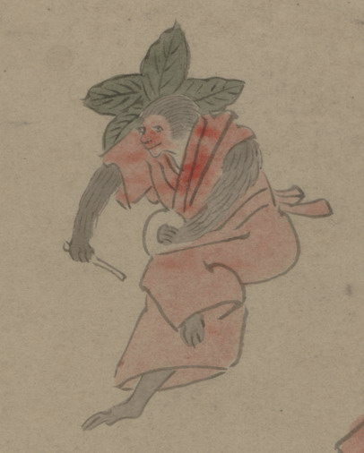

鉦を打つ猿の化物。頭の後ろに大きな葉を数枚つけ、赤い衣、袴を着ている。鉦を右手に、バチを左手に持ち、片脚をあげて踊っている。
出典：親書誌：U426_nichibunken_0150：付喪神絵詞；ツクモガミエコトバ／日付：2010／資源識別子：U426_nichibunken_0150_0077_0000
Copyright (c)2010- International Research Center for Japanese Studies, Kyoto, Japan. All rights reserved.